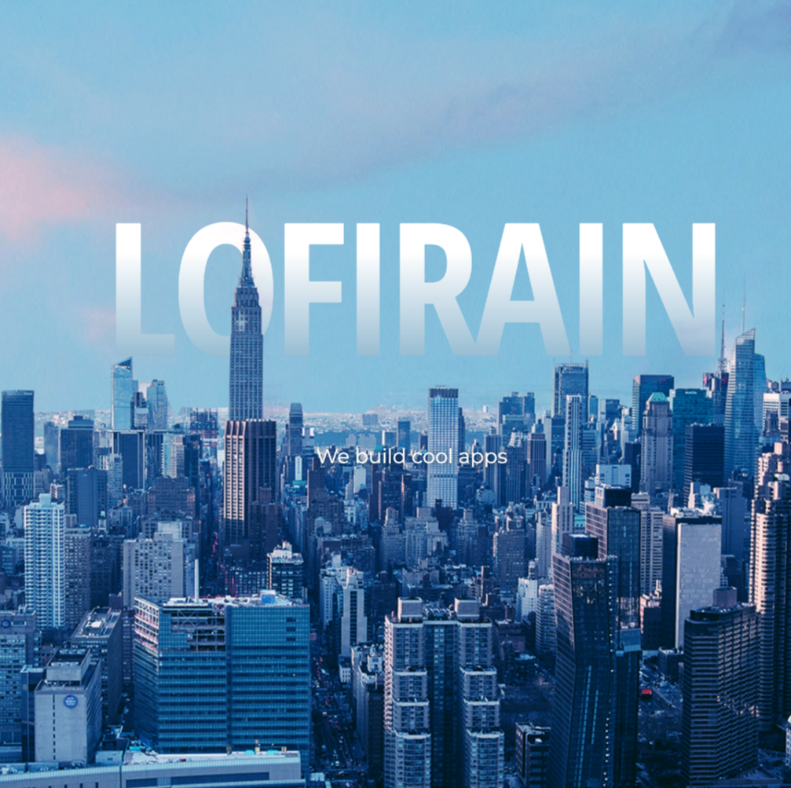
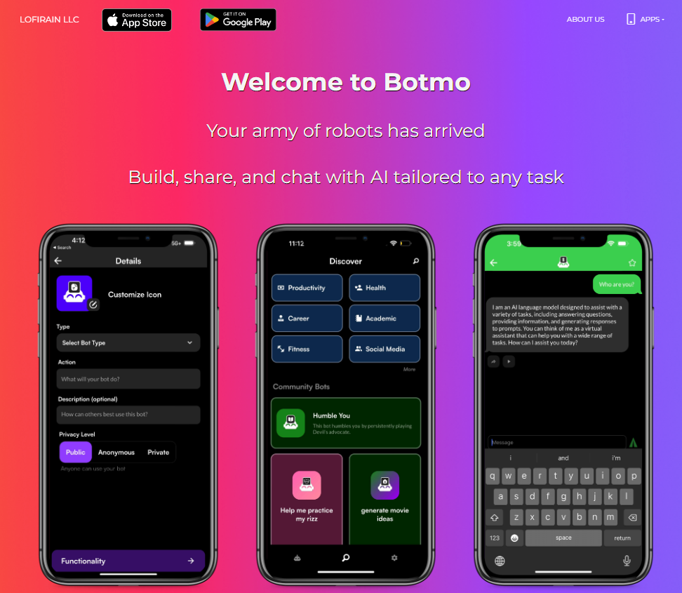
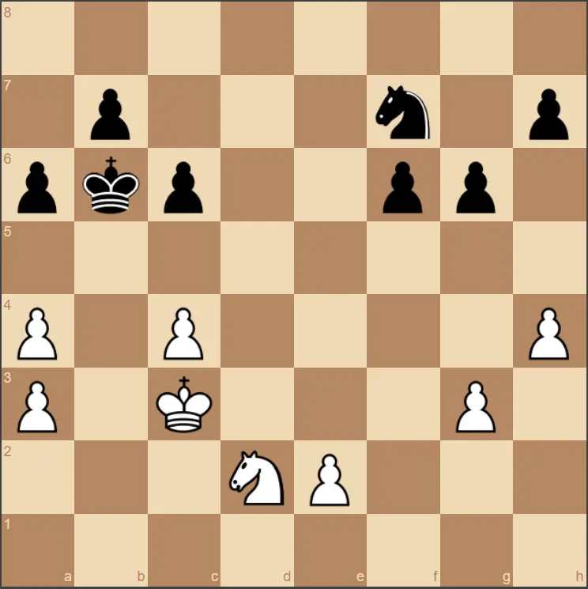

Hi, I'm Emerson!
Welcome to my personal website!
About
Who am I?
My name is Emerson Kahle, and I am a 20 year-old undergraduate
junior from the Boston area. I love to play sports, specifically
soccer and basketball, and I am a die-hard Boston sports fan. I am
currently pursuing a Bachelor of Science in Computer Science and a
Bachelor of Science in Applied and Computational Mathematics from
the University of Southern California (Fight On!). I expect to
graduate with both degrees in May of 2025.
What are my interests?
From as young as I can remember, I have always been fascinated by
numbers and patterns. In my early childhood, this fascination
drove me towards a passion for chess. As I got older and learned
more about mathematics, my interests shifted to better
understanding the mathematical patterns underlying the behavior of
human institutions. Recognizing computer science as the best field
for applying mathematical theory to build such understanding, I
decided to study CS alongside applied math. Now, my interests
primarily concern using my technical skills to create real-world
impact or provide real-world insight through software engineering,
data science/statistics, and machine learning.
What are my goals?
For the majority of my career, I intend to establish myself in
industry working in one of the aforementioned fields at the
intersection of mathematics and computer science. I believe that
working for companies whose survival is predicated on leveraging
mathematical/computational theories and/or patterns to create
real-world impact will best build the base of technical knowledge
that supports my interests. At the end of my career, I hope to
utilize this knowledge base to increase engagement with math among
the youth. I firmly believe that the true test of one’s
understanding is their ability to effectively and adaptively
explain supposedly understood concepts to a variety of listeners.
In school and personal projects, this often leads me to explain my
ideas to my peers in detail to validate my own understanding. For
this reason, after building a strong base of applied technical
knowledge through education and industry, I want to share and
motivate that knowledge with the young minds of the next
generations by teaching at the high school or undergraduate level.
What have I done?
What skills do I possess?
C, C++, Java, Python, JavaScript, HTML, CSS, Firebase, SQL,
Git/GitHub, React Native, NextJS, MATLAB, R, TypeScript, Microsoft
Office, Team-Oriented, Organization, Leadership
Experience
Work

I have worked as a full-stack software engineer at LofiRain LLC
since May of 2023. Through AI-focused mobile application
development in a small team, I gained a proficiency working in
React-Native and with open source LLMs under the agile
development framework.
Pursuing my interests in teaching, I began my role as a Course
Producer for a software development class (CSCI 201) at USC in
August 2023. Through office hours, labs, and group projects, I
mentor and guide unfamiliar students through the challenges of
software development.
Over the summer of 2020, I worked as research assistant at
Boston College's Infant & Child Cognition Lab. Primarily
studying the impacts of perceived confidence and competence
among children, I prepared trials for participants, ran
participants through those trials, and analyzed the resulting
data.
Organizations
In March of 2023, I co-founded the tech-based consulting club
Trojan Tech Solutions (TTS), for which I now serve as Vice
President of Technology. I spearheaded the creation of the club
website, and now work on web and data science based projects for
clients. TTS provides all services for no cost, aiming to allow
smaller organizations to levergae technology for their
businesses.
I have been an active member of USC's Effective Altruism
organization since August 2022, and I now serve as Treasurer. I
manage an annual budget over $20,000, directing funds towards
member recruitment and data-driven charity selections.
Projects

At LofiRain, I have primarily developed the app Botmo. This app
aims to increase AI accesibility by providing user-built 'bots'
specially trained for specific purposes. To expand the range of
outputs that 'bots' produce, we hosted open source LLMs and let
users choose from multiple models. In the process, I have
strengthened my understanding of third party AI integration.

To improve my ability to optimize software for efficiency, I
spent the winter of 2023 building a chess engine in C. My
engine, named Thomas The Chess Engine (TTCE), is connected to a
Lichess Bot account, where you can play against it online. TTCE
searches up to 10 million moves per second by leveraging
bitmaps, piece square tables, null move pruning, lazy SMP with a
global transposition table, a global PV table, and alpha beta
search with quiescence and smart move ordering. It is currently
rated 2175 in Blitz and 2033 in Bullet chess.

To learn web development, I followed a tutorial to program a
simple 2-D fighting game in HTML, CSS, and JavaScript. I took
liberties to change core gameplay mechanics to allow for
features like double-jumping and more accurate hit-box physics,
among others.
Contact Me
Email (Personal)
ekahle@usc.edu
Email (TTS)
contactus@trojantechsolutions.org
LinkedIn
Emerson Kahle
Or contact me directly with this form!